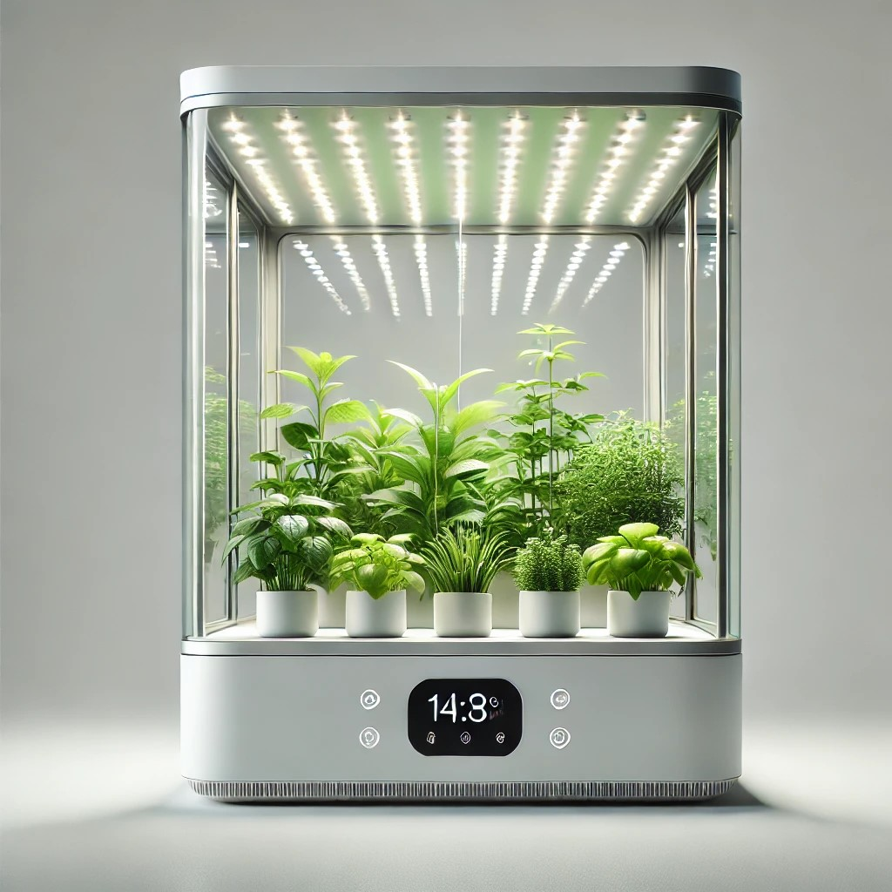
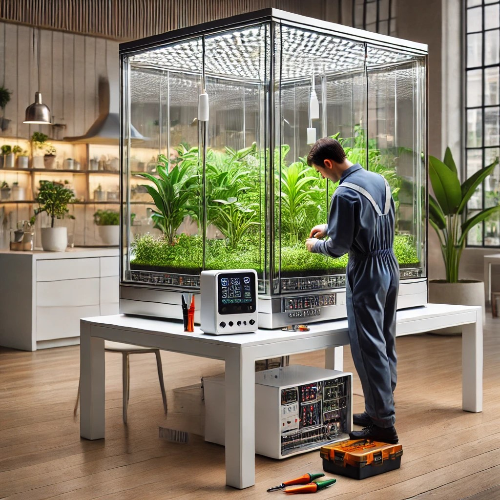
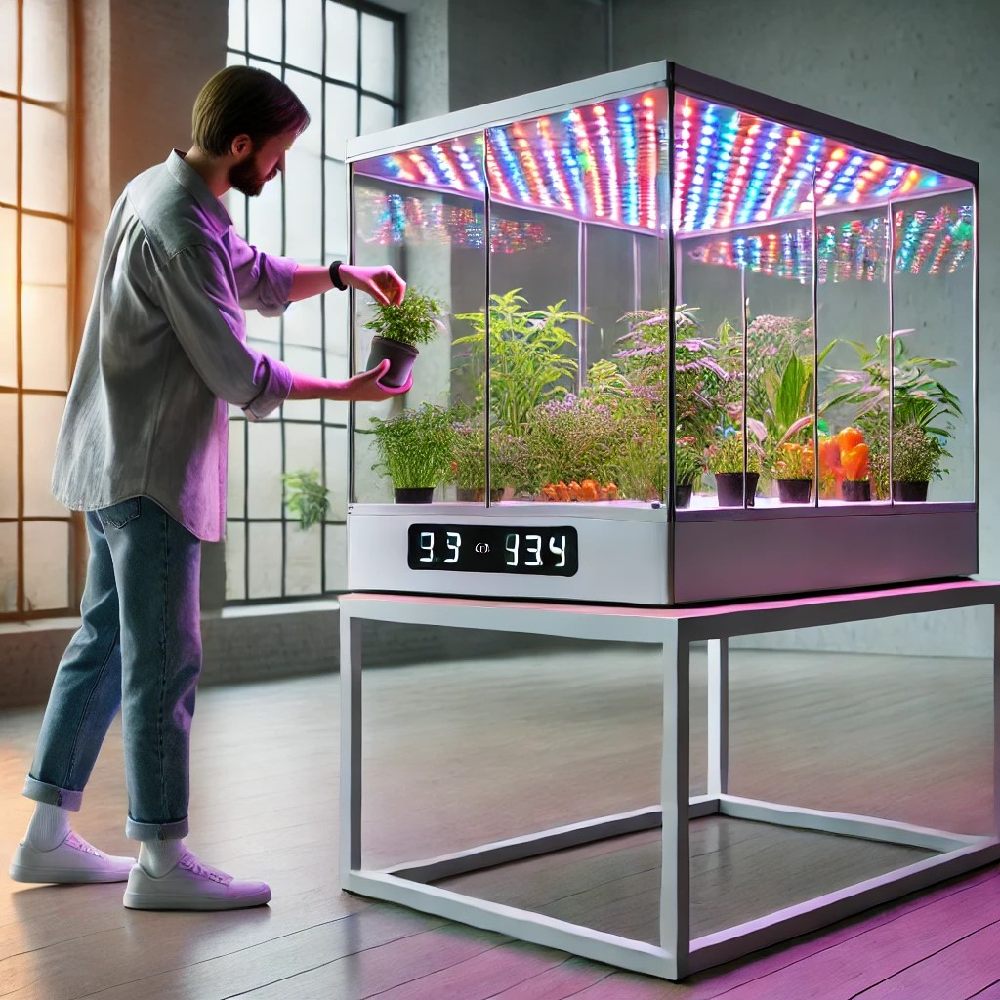
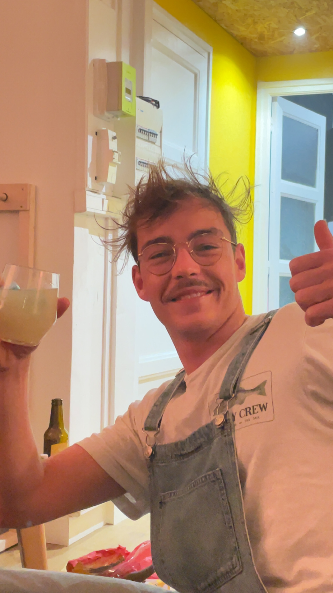
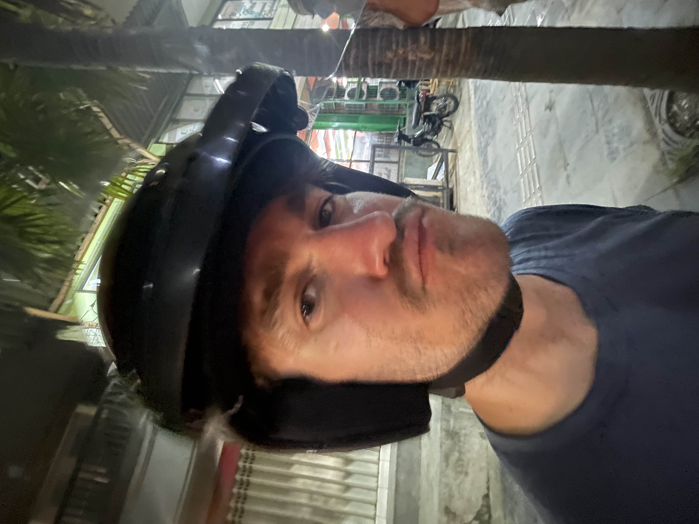

Un format pour logement individuel avec une place limitée. Jusqu'à dix emplacement de plantation de semis avec contrôle de l'humidité, température, PH et minéraux de la terre.
Pour les jardins en extérieur, ce format propose le triple d'espace supplémentaire afin de subvenir aux besoin d'une famille. Des panneaux solaires garatissent l'autonomie en énergie, en plus de ce qui est proposé pour la serre petit format.
Des fonctionnalités supplémentaire comme une lampe UV où un bassin d'aquaponie pour poisson sont aussi disponible sur demande. Contactez-nous !
Notre équipe de R&D a travaillé sur tous les aspects de nos serres connectées afin de les rendre les plus éco-responsables possible.
Le Polypropylène fait office d'armature de la serre. Ce plastique 100 % recyclable et résistant aux intempéries est le matériau idéal et esthétique. Nous avons également fait le choix de remplacer le verre normalement utilisé dans les serres par des plaques de polycarbonate. Le choix des capteurs a été longuement réfléchi : un réseau de capteurs basse tension LoRaWAN vous permet d'obtenir en temps réel, sur notre application, les différents paramètres de votre serre connectée.
Une application Android et iOS éco-développée vous offre la possibilité de suivre en temps réel les différents paramètres de votre serre de manière optimale. Le choix des capteurs a été longuement réfléchi : un réseau de capteurs basse tension LoRaWAN prêt à l'usage vous attend.
"Simple et ludique, une façon revolutionnaire de faire ses courses !"
"Merveilleux pour les enfants et simple d'utilisation !"
"J'adore les capteurs ils sont super beaux !"
